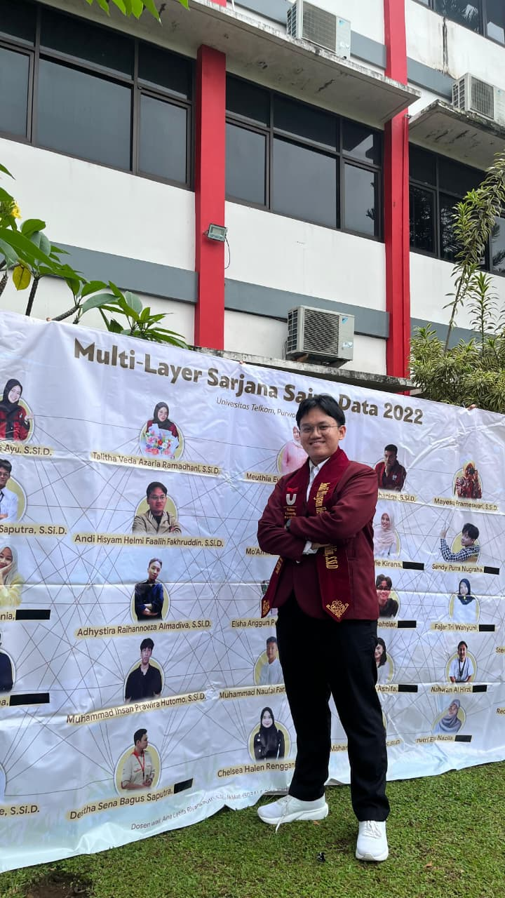

Healthcare Process Automation (DPJP & BPJS Claim Support)
Built a Streamlit-based automation system that reduced DPJP data retrieval from ~3 months manual checking to 1 day automated extraction (plus validation).
Data Science Student | Machine Learning | Data Analytics | Python Automation
Final-year Data Science student with hands-on experience in machine learning, data automation, statistical analysis, data visualization, and data-driven problem solving across healthcare, finance, sales, social media analytics, and computer vision projects.

Who I am and what I do
I am a final-year Data Science student at Telkom University Purwokerto with a GPA of 3.86/4.00 and hands-on experience in data collection, preprocessing, statistical analysis, machine learning, data visualization, and business process automation.
My experience includes building a Python-based healthcare automation system, developing machine learning models, analyzing social media sentiment, forecasting stock returns, optimizing portfolios, and creating computer vision applications. I enjoy turning complex data into structured insights and practical solutions that support decision-making.
I am currently interested in opportunities related to Data Science, Machine Learning, AI Engineering, Data Analytics, Business Intelligence, and Process Automation.
Tools I use to build and ship
Languages: Bahasa Indonesia (Native), English (B2 — TOEFL ITP 547)
Case studies and impact highlights
Built a Streamlit-based automation system that reduced DPJP data retrieval from ~3 months manual checking to 1 day automated extraction (plus validation).
Developed an end-to-end pipeline for return prediction, noise reduction, and dynamic allocation for LQ45 stocks (2015–2025 data).
Collected ~1,000 tweets and classified sentiment (positive/negative/neutral) with preprocessing and lexicon-based labeling.
Led the ML workflow for a capstone system that recommends job categories from uploaded CVs (~200 documents dataset).
Trained a YOLOv11n model with ~800 images and built webcam inference to detect acne classes (pustule, papule, nodule).
Analyzed ~1,000 transactions to uncover trends, forecast sales, and derive association rules for inventory planning recommendations.
What I've shipped in real environments
How I lead and collaborate
Himpunan Mahasiswa Sains Data, Telkom University Purwokerto
Led academic programs and coordinated Data Slayer 2.0 (250+ teams): dataset preparation, scoring, leaderboard, guidelines, and evaluation workflow.
Bangkit Academy led by Google, Tokopedia, Gojek & Traveloka
Coordinated ML workflow, model evaluation, task distribution, and integration alignment with mobile and cloud teams.
Continuous learning
Open to internship and entry-level opportunities
I am open to opportunities in data science, machine learning, data analytics, AI engineering, and business process automation.
Email: andihisyam0012@gmail.com
Phone/WhatsApp: 0823-1129-8252
Location: Purwokerto, Central Java, Indonesia
GitHub: github.com/andihisyam